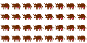
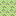

<canvas id="cowvas">

</canvas>



<script>
log("testing cows");
var canvas = document.getElementById("cowvas");
var ctx = canvas.getContext("2d");

var brown_cow_img = document.getElementById("brown_cow");
var grass_img = document.getElementById("grass");

var cows = [];
function makeCow(){
    var cow = {};
    cow.img = brown_cow_img;
    cow.x = Math.floor(Math.random()*window.innerWidth);
    cow.y = Math.floor(Math.random()*window.innerHeight);
    cow.ani_x = 0;
    cow.ani_y = 0;
    cow.ani_rows = 4;
    cow.ani_columns = 8;
    cow.ani_frame = 0;

    cow.count = 0;
    cow.max_count = 8;

    return cow;
}

var new_cow_timer = 0;
var new_cow_time_limit = 300;
function updateCows(){
    //make a new cow??
    new_cow_timer++;
    if (new_cow_timer >= new_cow_time_limit){
        new_cow_timer = 0;
        cows.push(makeCow());
    }

    for (var i = 0; i < cows.length; i++){
        var cow = cows[i];

        //update animation
        cow.count++;
        if (cow.count >= cow.max_count){
            cow.count = 0;
            cow.ani_frame++;
            if (cow.ani_frame >= cow.ani_rows * cow.ani_columns)
                cow.ani_frame = 0;

            cow.ani_x = cow.ani_frame % cow.ani_columns;
            cow.ani_y = Math.floor(cow.ani_frame / cow.ani_rows);
        }
    }
}

function drawCows(){
    for (var i = 0; i < cows.length; i++){
        var cow = cows[i];

        var ani_x = cow.ani_x * 16;
        var ani_y = cow.ani_y * 16;
        ctx.drawImage(cow.image, ani_x, ani_y, 16, 16, x, y, 64, 64);
    }
}

function drawGrass(){
    for (var x = 0; x < window.innerWidth; x += 64){
        for (var y = 0; y < window.innerHeight; y += 64){
            ctx.drawImage(grass_img, 0, 0, 16, 16, x, y, 64, 64);
        }
    }
}

window.setInterval(function(){
    updateCows();
    drawGrass();
    drawCows();
}, 1000);

</script>
